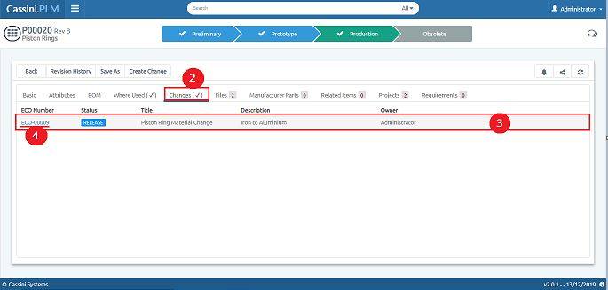

In manufacturing one item or part have some changes according to the product design and other requirements, all those changes are captured in this tab. User can easily access all the history of changes on an item.
1. Select an Item from Items page
2. Select the Changes tab
3. If this Part has any changes that will be displayed
4. Click on ECO number to view change details
